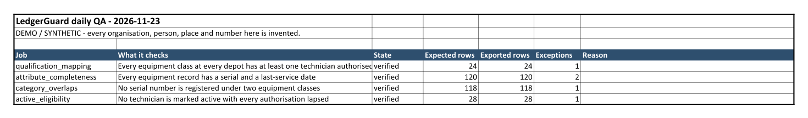
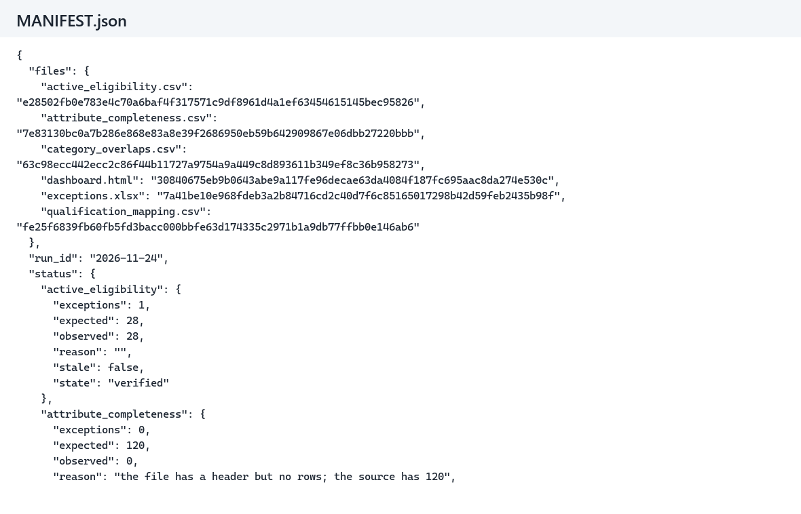

LedgerGuard Data Quality
Daily export checks that never mistake an empty file for success, with archives you can safely restore.
Imagine a rental shop for big machines with four branches. Every morning a computer pulls lists from three systems and from one old program that can only share its data by pressing an Export button. One day that old program says "Export complete" but saves an empty sheet. The computer sees today's file is there and reports "all good" - and every report that morning is built on nothing. LedgerGuard refuses to believe a file just because it exists: it counts the rows, checks the columns, and if anything is off it moves the file aside and keeps yesterday's good one, clearly marked as old.
The flow, step by step
See it work
LedgerGuard runs four daily checks over an equipment database, two CSV systems and a mock desktop program's export: every class at every depot has an authorised technician, every item has a serial and service date, no serial is registered under two classes, and no technician is active with every authorisation lapsed. Before any check, each export must prove it is usable: exact columns, the row count the source itself reports, no blank keys. An export that fails is quarantined with the exact reason and yesterday's verified file is carried forward and marked stale. Each day's outputs are published as one set after the previous set is archived with a SHA-256 manifest, and restore refuses any archive whose files no longer match.
Narrated, replayed from a real run (1.1 s of computing).
Step through the run, scene by scenePredict each scene, then reveal what the real run printed and which rows changed
Experiment with it
The safeguard switch is in the flow above. These go further: change the data, or ask its database a question.
Break the data on purpose (2)Change one thing in the input and see only what the pipeline did differently
Blank out a serial number in the source system
Equipment EQ-0001's serial_token is erased in the registry database.
Remove every authorisation for one technician
All of technician T-001's rows are deleted from the authorisations file, but T-001 stays active on the roster.
Query the data with SQLThe pipeline's real database opens in your browser, with example questions
The real database a run of this pipeline left behind (ledgerguard.sqlite, 32 KB), opened in your browser - nothing to install, nothing sent anywhere. Each example teaches one SQL idea; hover it to see which.
For the detail
Why it is built this way4 design decisions and what was chosen instead
Compare the exported rows with the source's own count
instead of: Accepting any non-empty fileA truncated export has rows; only the source's count shows that a third is missing.
Keep yesterday's file, marked stale
instead of: Publishing nothing for that checkPeople still have the last good data, and the dashboard tells them it is old and why.
Archive before replacing
instead of: Overwriting the outputsEvery day can be restored exactly, and the manifest proves it has not been altered.
Treat the desk app's 'Export complete' message as meaningless
instead of: Trusting the programPrograms report success when they finish running, not when they produced the right data.
What goes wrong, and what happens3 situations
| situation | what the pipeline does |
|---|---|
| Export writes only a header row | Quarantined: 'the file has a header but no rows; the source has 120'. |
| A column is renamed by a software update | Quarantined: 'columns changed: missing serial_token, unexpected serial_no'. |
| An archived file is edited | Restore refuses and names the file. |
The data modelTables, keys and links, read from the project's own migrations
Blue marks a primary key; amber arrows are foreign keys - links the database itself enforces.
qa_run
- run_id text pk
- run_date text
- started_at text
- verdict text
export_job
- job_id integer pk
- run_id text → qa_run.run_id
- job_code text
- source_adapter text
- expected_rows integer
- observed_rows integer
- state text
- reason text
- file_sha256 text
- exceptions integer
- unique (run_id, job_code)
archive_item
- archive_id integer pk
- run_id text → qa_run.run_id
- file_name text
- sha256 text
- archive_path text
- restore_path text
What it producedReal outputs from the recorded run: PDFs, Excel, Word, JSON



Questions it answers3 questions, a short answer and a deeper one
In shortPrograms can save an empty or half-finished file and still say they worked.
In depthprove() checks exact header, row count against the source's own count, and non-blank keys before any QA runs.
In shortWhen the shape of the data changes - a column renamed or removed - without anyone telling you.
In depthHeader comparison against the contract; missing and unexpected columns are named in the quarantine reason.
In shortCheck every archived file's fingerprint first; if any changed, refuse.
In depthMANIFEST.json SHA-256 per file; restore copies to staging then swaps, keeping the displaced set.
Run it yourselfOne command sets everything up
python start.py # sets up and opens the CivicWorks Lab cd ledgerguard-data-quality && python -m ledgerguard demo # or just this demo python -m pytest # its 13 tests